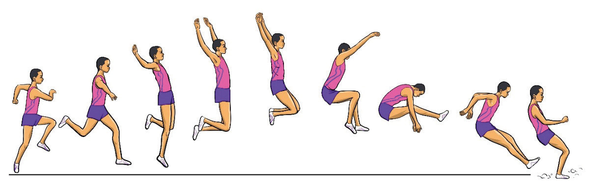

- (i)Push off forcefully from the take-off board;
- (ii)Extend and bring back the leading leg that was initially bent and pushed upwards to join the take-off leg;
- (iii)Thrust both legs to the rear of the body in the extended positions;
- (iv)Circle the arm downward, backward and then upward and forward, Figure 2.22;
- (v)Flex your leg and thrust it forward and as they extend for landing, move the arms circle forward; and
- (vi)As you land in the sand, flex your leg at the knees and move the upper body forward and over the feet.

abcdefghi
Figure 2.22: Hang technique
Hitch-kick technique
The hitch-kick technique is a flight style used to maintain balance, counteract forward rotation, and maximise jump distance. This technique involves a cyclical leg motion in the air, providing greater control and efficiency during the flight phase, Figure 2.23. The following steps will help you execute a hitch-kick technique:
- (i)Drive up powerfully at take-off after a fast run-up;
- (ii)Stretch the front leg forward as if you are running in the air;
- (iii)Swing the extended leg backward while keeping it straight;
- (iv)Flex and bring forward both legs for the landing; and
- (v)Rotate the arms forward and then backwards, balancing the action of the legs and assisting in thrusting forward during landing.